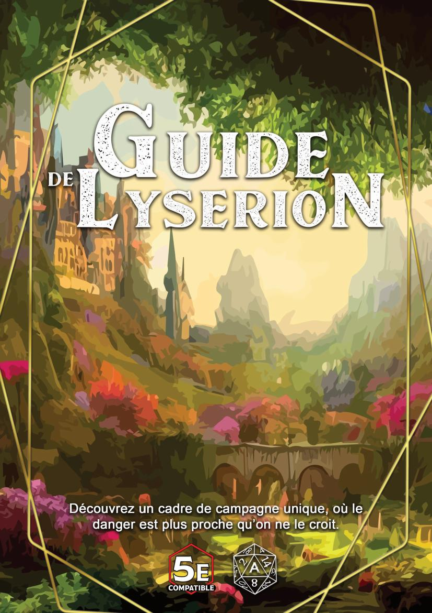
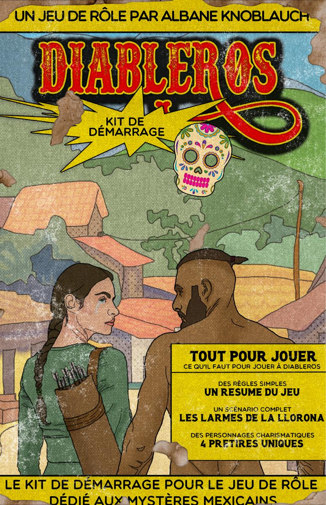
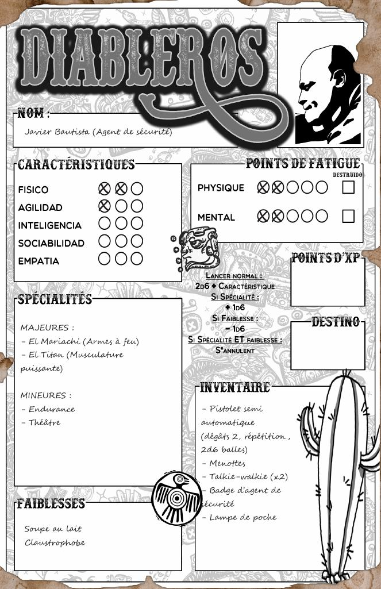
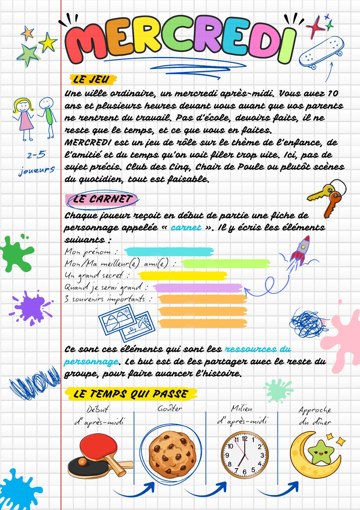

Trois projets d'écriture et de création de systèmes de jeu, menés en totale autonomie créative — de la conception d'un univers cohérent à la publication d'un jeu jouable, en passant par l'exercice de contrainte extrême d'une jam en 500 mots.
Lysérion est né en 2019 comme campagne maison, jouée sous les titres Les Chroniques des Éléments puis Des Orcs et des Hommes. En 2022, j'ai entrepris de mettre en page cet univers pour le partager avec la communauté rôliste : le Guide d'Exploration de Lysérion est sorti en 2023, avant une seconde édition entièrement retravaillée avec une mise en page propre à l'univers, sobrement rebaptisée Guide de Lysérion.
Le guide (105 pages, publication indépendante, ISBN 979-8-8642576-3-0) couvre l'intégralité d'un cadre de campagne jouable : géographie du continent, panthéon, espèces jouables, sous-classes créées pour l'univers, objets magiques, bestiaire et même des recettes de cuisine locales. L'univers se déploie sur Navak, un monde formé de deux continents — Lysérion et Orynthe — qui va des étendues glacées du Markland aux déserts brûlants de Rashar, en passant par les terres verdoyantes de Tohéran.
Le projet vit aujourd'hui aussi sur lyserion.com, sous le nom de plume Aetherya : cartes interactives, fiches d'espèces et de sous-classes, panthéon, récits et musiques inédits.

Diableros est du pulp contemporain mexicain : vous y incarnez des chasseurs de monstres issus du folklore mexicain — chupacabras, Llorona et autres créatures légendaires — affrontés à coups de système maison. Le jeu complet représente plus de 90 pages, entièrement écrites, illustrées et structurées par mes soins, système de règles compris : jets en 2d6 + caractéristique, réussites critiques ("¡Ay, caramba!"), échecs critiques ("No mames !"), Spécialités, Faiblesses et une réserve commune de Puntos de Destino partagée entre les joueurs.
Un kit de démarrage gratuit (règles simplifiées, scénario complet "Les Larmes de la Llorona" et 4 personnages prétirés) est disponible en téléchargement libre sur itch.io — noté 5/5 par la communauté. Le jeu complet sera publié par Léviathan Éditions.


MERCREDI est un jeu de rôle sans dés sur le thème de l'enfance, de l'amitié et du temps qui file trop vite. Le postulat tient en une phrase : une ville ordinaire, un mercredi après-midi, dix ans, et plusieurs heures devant soi avant que les parents ne rentrent. Pour 2 à 5 joueurs.
Chaque joueur incarne son personnage à travers un "carnet" : prénom, meilleur ami, un secret, et trois souvenirs qui servent de ressource narrative à dépenser pour surmonter les moments difficiles — une fois utilisé, un souvenir est rayé, définitivement. Le MJ, ici appelé "le Gardien ou la Gardienne des Souvenirs", ne dirige pas une aventure préécrite : il veille sur le temps qui passe et laisse les carnets des joueurs guider l'histoire. Une "jauge d'insouciance" commune à la table monte à chaque tension, et à 5, la partie se termine — chaque enfant rentre chez lui.
Écrire un système de jeu complet, cohérent et évocateur en 500 mots exactement a été l'exercice de contrainte le plus exigeant des trois : chaque mécanique devait justifier sa place, sans place pour le superflu.
